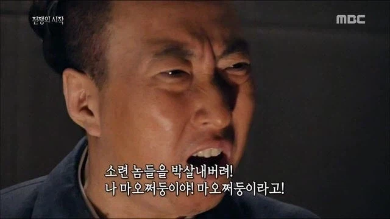
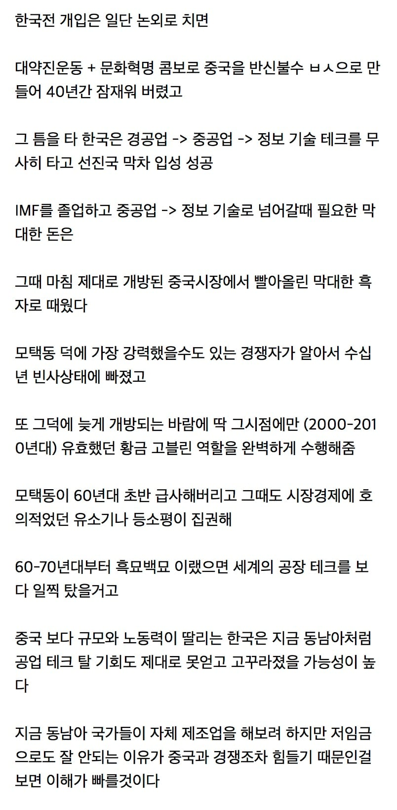

예리한새끼..
어찌보면 장제스가 패배한게 신의 한수였나 싶기도.
일본은 미국이 계획했던 농업국가 되고,
한국도 동남아 포지션 정도로 중국한테 굽신거렸겠지
나도 비슷하게 생각하는게 2차 세계대전때만해도 미국은 중국(장제스)을 엄청나게 밀어줬고 실제로 장제스가 이겼으면 미국과 중국의 관계형성은 더 빨랐을듯. 심지어 냉전시기에 미국이 소련 견제에 진심이었던걸 생각하면 한국, 일본에 갈 지원이 중국에 몰렸을꺼고 중국의 생산공장으로써 가능성도 훨씬 일찍 캐치했을꺼고.
공산주의로 온 지금시점에도 중국에 대한 수요가 있는 마당에 민주주의 국가 중국이었으면 동아시아 판도 자체가 달라졌을거 같음.
장제스가 이겼으면 우리나라는 진짜 중국 위성국1 됐었겠지
자유민주국으로 통일한반도 됐겠지만, 지금 대한민국 같은 선진강대국까지 갔을지는 글쎄 싶기도 함
그 시나리오에서 아무리 생각해도
미국-캐나다/멕시코 처럼 되거나
자치권 보장받는 한반도성 or 내몽골처럼 흡수
한반도가 중국 본토의 심장을 노리는 위치라 100퍼센트 친중국가로 만들었을것
알수없음 미국이 중국한테 열어줬으니까 망정이지 안열어줬으면 그낭 개노답국가지뭘

중국이후 중진국함정은 중국을 넘어서지 못하면 빠져나갈수가 없는걸 생각하면 어느정도 맞는말이죠
어느 누구보다 중국인을 가장 많이 죽인 마오쩌둥 문화대혁명으로 그 수많은 인구속에 있는 인재도 손수 직접 조져주신 그 은혜에 목이 매어...
가장 무서웠던 중국은 덩샤오핑 후진타오 같은 사람들이 하던 중국인가..
등소평이 존나 무서운게 천안문 학살도 등소평이 저지른건데 은근슬쩍 마오쩌둥 업적으로 인식되고 있음
그리고 확실한 우위를 점하기 전엔 중국은 웅크려 있어야 한다고 장쩌민한테 유언까지 했는데 후진타오 후임인 엠퍼러 시가 그걸 무시하는 바람에 현재같이 전세계가 경계하는 중국이 되어버림.
후진타오 집권하던 30년전 당시만 해도 그냥 중국은 대국의 기상 시리즈 올리는 웃기기만 한 나라였음 뭔 일대일로나 동북공정같은걸 시도하면서 경계심 max로 된거지
이분 뭔가 뇌내 기억이 대단히 뒤죽박죽이신데......?
도광양회 네글자를 가슴에 새기기에는 시진핑의 가슴이 너무 좁고 옹졸했지.
천안문 항쟁은 89년인데
누가 76년 죽은 모택동 일로 인식해..?
그러니 무서운거야 호달달
덩 샤오핑이 진짜 무서운 놈임. 3실각하고도 모택동 방부처리 되자마자 복권해서 망해가던 중국 선부론 내세우며 개혁개방으로 중국 살려냄. 부작용으로 서양문물 접한 지식인들이 자유 뽕맛에 취해 천안문에 모였는데 공산당 통치권 유지하려고 땅크로 밀어버림. 그러고 당 서기 자오쯔양한테 덤탱이 씌우고 실각 시킴.
한국 사랑꾼
근데 진짜 생각해보니 저새끼가 멀쩡한 지도자였다면....아찔하네
모택동 감사합니다... 훈장 하나 드려라
문화대혁명은 맞는데
황금고블린이라기보다 저 자식들이 멀쩡한 애들이었으면 경제블럭
아 그래도 일본이랑은 안됐겠구나 어차피
중국인한테 돈보다 우선하는 건 없음
고맙다 쩌둥아
그냥 담달 25일에 계란볶음이나 해먹자
중국때문에 분단된것도 되게 운명같은게 물론 민족의 분단은 뼈아프지만 한국인의 DNA 그 자체인 경쟁심을 국가단위로 on시켜버림... 물론 우리가 남한쪽인게 다행
그리고 북한이 완충지대 역할을 한 덕에 중국+소련의 영향력은 북한이 죄다 흡수했지... 역사에 만약은 없다지만 여러모로 절묘한게 많음
진짜 맞는 말임. 의외로 북한이 ㅈ같이 굴긴했어도 중국 완충역할해주긴함.
중국 근현대사 보면 이 새끼들 주변국에 시비 ㅈㄴ걸고 다님.
중국 옆에 붙어있는 베트남만 해도 같은 진영인데도 전면전함.
7080이면 아직 소련이 시퍼렇게 뜨고있던 땐데 중국이 흑묘백묘 할 수 있나
애초에 중국의 공산화가 없었음 지금의 우리나라가 있었을까 싶기도 하지만 진짜로 지금이 없는 나라는 일본이지
일본입장에서는 중국의 공산화와 한반도의 분단 6.25 전쟁은 1800년대 중반 홀로 제대로 된 서구화에 성공해 무주공산 아시아를 휘젓던 이후 100여년만에 다시 찾아온 천운 중의 천운이었음. 한반도가 완전히 고기방패 되준 덕에 일본은 안보걱정도 없이 화폐는 안전자산취급받으며 마음껏 컸음
전후 선진국들도 미국 제외 다 같이 바닥부터 시작하는 가운데 경쟁을 한거고
우리는 이미 선진국들이 산업적으로 다 자리를 잡은 그 틈을 어떻게든 비집고 들어가는 기적을 쓴 거라 굳이 행운의 요소를 꼽자면 이 글대로인거지 실제론 난 우리나라 진짜진짜 어려운 상황을 뚫었다고 생각해
일본, 한국, 대만이 큰건 결국 소련중국 견제하려고 그런거였으니 중국이 진즉 정상이었고 미국과 정상적인 교류가 됐었다면 일본한국대만이 다 이정도로 성장하진 못했겠지..
역사 보면 참 재밋긴해
시진핑도 무능의 영역에 가까운가 싶엇는데 트황상이 더 괴상해서 중국 키워주고...
..이유 : 박명수
그리고 적절한 타이밍에 중국 백신 맞아서 수출 다각화 진행했음ㅋㅋㅋㅋㅋㅋ
일견 또 생각해보면 중국이 선진국 진입하려 할 때
세계적으로 터져나올 문제점 생각해보면 진짜 개노답이 예상되기도 하고.
중국인을 가장 많이 착하게 만든 존재
계란볶음밥day 만들어드리자
그런데 중국이 일찍부터 강력했으면, 냉전이 더 오래가고, 중국의 시장 진입하는데 더 오래걸렸을 수도 있음.
5060이 중국에 대해 호의적인 이유는 그 분들이 젊었을때
중국이 황금고블린 역활을 해줬기 때문.
중국가서 회사지어 대박난 사람들도 많았고 (후에 뺏기고 온 사람들도 많았지만),
수출입 무역으로 큰 돈번 사람들이 많았음.
지금으로 비교하자면 일종의 가상화폐 위치랄까?
그러니 지금의 2030보다는 중국에 호의적임.
40은 중국에 양가적인 감정이 있을만한 세대고.
정확힌 90~00년대 한참 사회생활 시작하고 사업한 6070년대생들은 친중, 80년대생은 대부분이 반중이라 보면됨
진짜 맞는 말임
중국 아니면 우린 중진국 함정에 빠졌을듯
머 이프란게 없는거지만 그러면또 강력한 중앙집권이 아닌 eu 처럼 연합인 중국이 나와서 오히려 더 발전할수도 있고
어느정도 공감은 가나 우리는 예전부터 유전자에 각인된 애국정신 땜에 어떻게 해서든 올라왔을꺼라 생각함
ㅈ망의 세상에서 어떻게든 살아남고 경쟁자 이겨내고 버텨낸 수천년 역사 속에서 남아있는 유전자, 우리 그 저체가 증거임
제가, 혹은 우리가 그럴 수 있다구요? 놀랍게도 그게 가능한 민족임
냉혹한 인종차별주의자 같지만 난 그게 동남아와 우리의 차이라고 생각함
개거지 깡패 북한보면 한민족 유전자 각인으로 올라왔을수 있다기엔 글쎄
역시 조커박
난 개인적으로 크게 3가지 꼽는데
중국의 삽질 및 외교적 유리 + 기존 기득권 몰락 + 하나는 언급안함
이렇게 봄. 중국은 중국대로 삽질함과 동시에 냉전기에 소련을 의식한 미국의 지원이 꽤 있었음
그리고 짧은 몇십년 동안에 조선 권문세족은 일제강점기에, 친일파는 광복에, 신흥세력은 또다시 6.25에 개박살이 나면서 계층이동이 매우 자유로워지고 활발해지면서 묶인 토지가 대량으로 풀림
저우언라이 그새끼만 없었어도
흑묘백묘도 60~70년대에는 힘들지 핑퐁외교 이전이니까
중국 확 뜬건 WTO 가입 이후임
박명수?